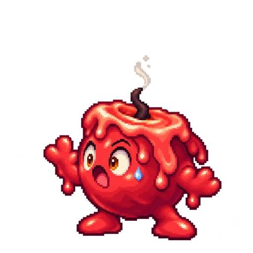

¡Guau! ¡Mi llama se apagó!Tu compañero encuentra una voz.
Tu dibujo inspira un nombre y un movimiento especial. Las palabras dan vida a la batalla: los enemigos reaccionan cuando una idea funciona, y puedes ver por qué otra no lo hizo.